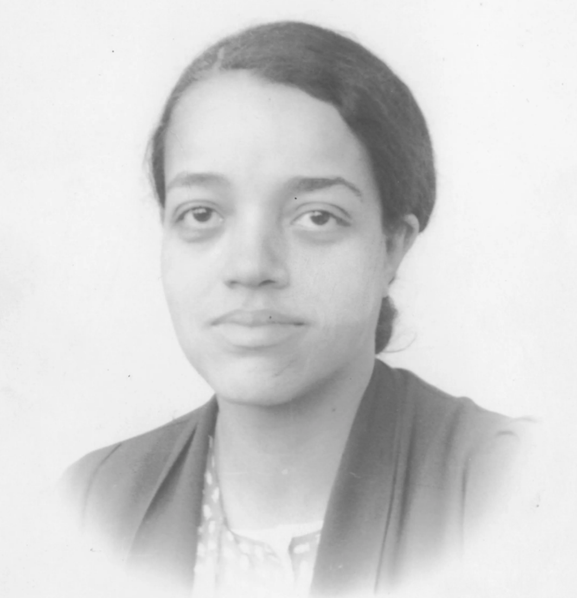

Tech Hero: Dorothy Vaughan
Dorothy Vaughan was a trailblazing mathematician and computer programmer at NASA. Starting in the segregated West Area Computing Unit in the 1940s, she became the first African American supervisor at the agency, leading a team of Black women mathematicians during a time when both racism and sexism were deeply entrenched.
Vaughan’s leadership challenged implicit bias that doubted Black women’s ability to contribute to high-level technical fields. She became an expert in FORTRAN programming, playing a key role in projects such as the Scout Launch Vehicle and mentoring colleagues like Katherine Johnson and Mary Jackson.
Her story exemplifies intersectionality: as a Black woman, Vaughan faced overlapping barriers of race and gender discrimination. Her accomplishments prove that systemic exclusion was never about talent, but about gatekeeping and structural bias. By breaking these barriers, she reshaped representation in STEM and showed the power of mentorship to open doors for future generations.
Vaughan’s legacy teaches us how representation and equity matter in science and technology. Just as today’s discussions of implicit bias reveal hidden barriers in hiring and promotion, Vaughan’s career illustrates how recognizing and addressing these systemic issues is key to creating inclusive innovation.
Source: NASA – Dorothy Vaughan